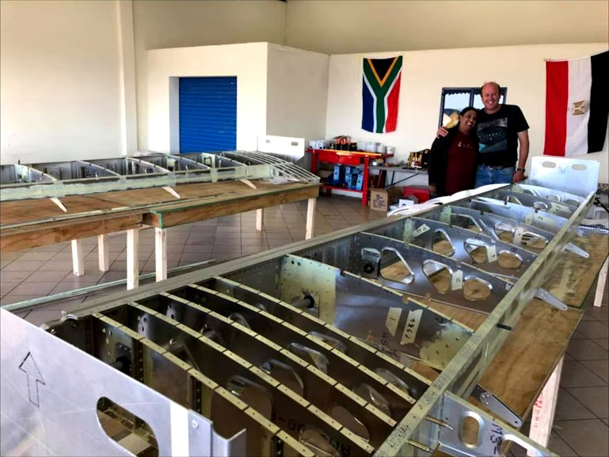
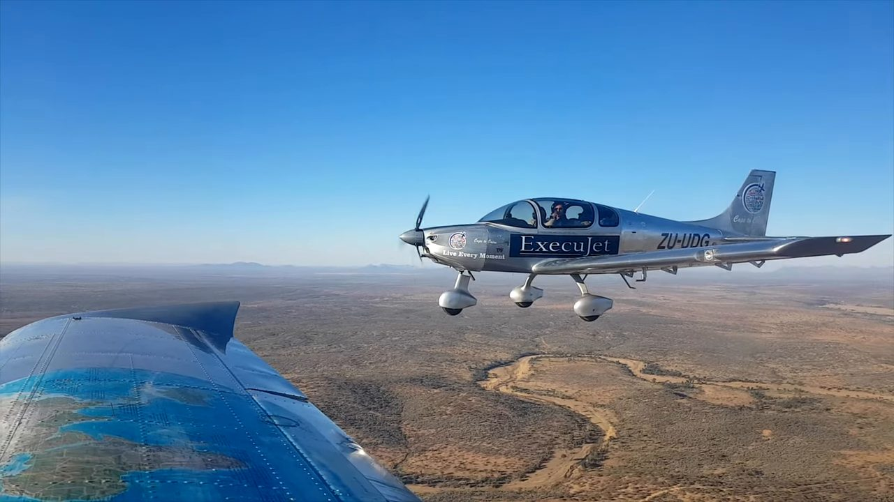

Aviation / Adventure
From teen author to Cape-to-Cairo pilot
Megan Werner on writing a self-published book at 13, teaching twenty teenagers to build their own aircraft in ten days, then flying it the length of Africa.

Megan Werner was a published, foreword-having, international-touring motivational author before she ever sat in a cockpit. Dealing with school bullying at twelve, she attended a Tony Robbins event and did the firewalk, an experience that convinced her, the following year, to start writing a book: It's Up to Me: Seven Ways to Make a Difference. Robert Kiyosaki, author of Rich Dad Poor Dad, wrote the foreword, arranged through a friend of her father's who knew the Russian publisher who later translated it. That translation led to a three-week speaking tour across Russia, then further talks in Kazakhstan at the invitation of a government dealing with a high teen suicide rate, and in the United States and Canada. The book is no longer sold through retail channels; Werner distributes it herself, by direct message, through the Instagram handle Megan the Pilot.
The bug bites at fifteen
Werner comes from an aviation family. Her father, Dez Werner, is a pilot, and for her 15th birthday he took her up in a Cessna 172. "The minute I took control, the aviation bug bit," she says. She wanted to combine flying with her existing passion for youth motivational work, and pitched her father on flying across Africa. He told her to think bigger. Scrolling Instagram for inspiration, she found an ad for the Sling, a kit aircraft built in South Africa, and came back with a different pitch: get a team of teenagers to build the plane themselves, then fly it the length of the continent. She earned her own pilot's licence first, going solo, by her own account, with fewer hours logged than the usual benchmark, a detail regulations of the time made harder to pin down exactly than it sounds.
Twenty teenagers, ten days, one airframe
Getting onto the build team meant surviving a genuine selection process rather than volunteering. Werner's public callout drew almost 2,000 applicants, each submitting a one-minute video explaining why they wanted in; 400 were invited to a team-building day, 40 of those went through interviews, and 20 remained, aged thirteen to nineteen, mixed across gender, culture and religious background. What they'd actually build turned out to be more demanding than any of them expected. A kit plane still arrives as a wing, a fuselage and a stack of components rather than a finished shape, and Werner remembers opening boxes to find manuals thick enough to intimidate and parts smaller than a hand. Qualified engineers supervised every step and simply made the team redo anything that wasn't right, a standard Werner credits with teaching her how seriously aviation treats safety before she'd even earned her licence. The mixed group built the Sling's airframe in 10 days at the Sling factory at Tedfield airfield south of Johannesburg. The Sling itself was designed by Mike Blyth, with James Pitman among the company's owners. The kit cost around 3.6 million rand, and raising that money took long enough that the actual crossing didn't happen until the following year. Werner flew it from Cape Town toward Cairo during her final year of high school's winter break, stopping at schools along the route for motivational talks and taking local first-timers up for their own first flights.

"If you can dream it, if you can think about it, with hard enough work, with enough effort, you can make anything happen."
A pilot's licence two days old
Werner flew the trip as the primary pilot of the teen-built aircraft, registered UDG for U Dream Global, the nonprofit behind the project, though she wasn't the only one flying: a second, escort aircraft, one of Sling's own demonstrator planes that had already circled the globe twice before this trip, flew alongside carrying her father and a second company director, with six pilots in total rotating across the various legs. What made her the trip's main pilot at all came down to timing that still sounds implausible to her. Her private pilot's licence arrived, couriered by the civil aviation authority, two days before departure. She left Cape Town with exactly 45.0 hours logged, the bare regulatory minimum to the decimal, not a tenth more. By her own admission she flew the length of the continent about as inexperienced as a licensed pilot can legally be, a fact she doesn't dress up in the retelling, crediting preparation and the support crew around her rather than raw confidence for getting the aircraft to Cairo in one piece, a distinction she draws carefully whenever the story gets told.
Kenya said no, Sudan was at war, Ethiopia had no fuel
The trip started before every clearance was finalised, because the paperwork was taking too long. Kenya denied overflight permission outright, citing its high terrain, forcing a reroute. Sudan was in the middle of a civil war. In Addis Ababa, Ethiopia, local aircraft had been converted to run on Jet A-1 rather than avgas, leaving the team with no fuel they could use, until Ethiopia's Minister of Science and Technology personally helped source barrels of usable fuel during their three days in the city. The Sling's Rotex 914 engine, able to run on either avgas or ordinary 95-octane mogas, was what made the workaround possible at all. Execujet, the project's main sponsor, ran the flight-planning operation behind the trip, managing overflight clearances and landing permissions across the whole route, work Werner says no single person could have handled alone. The escort aircraft didn't make it the full distance; only the teenager-built plane Werner was flying completed the route all the way into Cairo.

Pan Macmillan later published a book about the project. Werner's mother, Belinda, still runs an aviation training academy, DTM (for Dez and Belinda), based at Lanseria, on the same property where Werner grew up.
Asked to sum up the philosophy behind both the book and the flight, Werner comes back to the same idea she opened with. Life, she says, is a balance of light and darkness, and she has genuinely experienced both; what actually matters is the discipline of choosing what to focus on afterward, gratitude over whatever the darker stretch cost. It's the same message she was carrying to classrooms in Russia and Kazakhstan at thirteen, tested against something considerably harder than a stage.